01
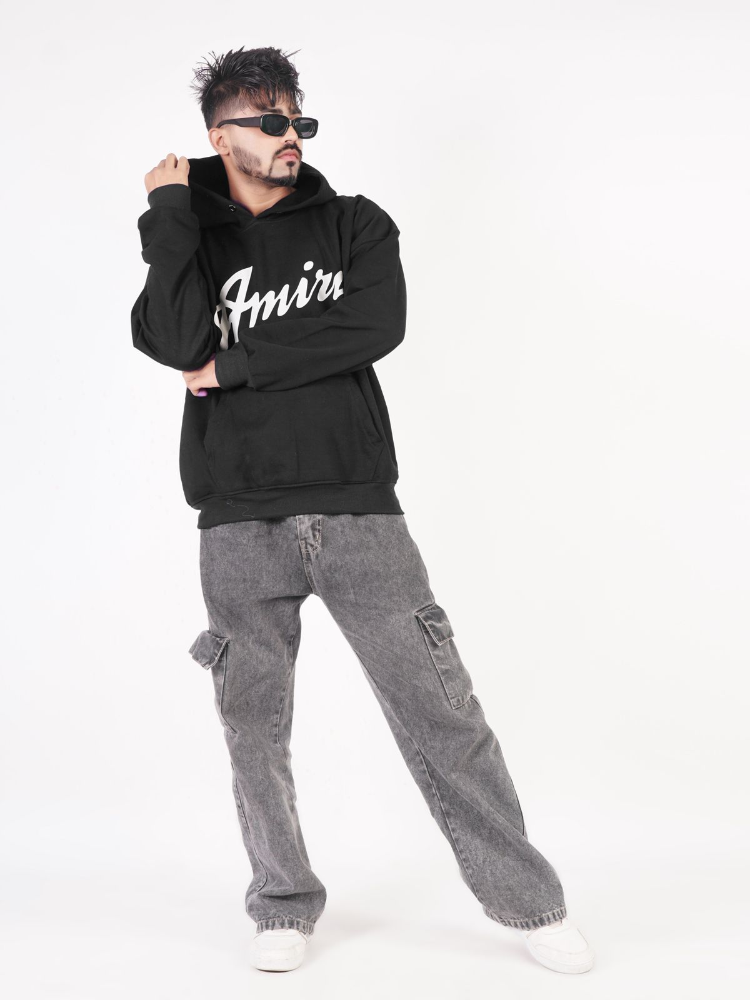
ПРИМЕР НА ПРОИЗВОДDTF / ТЕКСТИЛ
Облека што зборува за вас.
- Маици и дуксери
- Работна и спортска облека
- Платнени торби и капи
- Текстилни промотивни производи
KARAT / ПЕЧАТНИЦА · СКОПЈЕ
Од едно персонализирано парче до серија што го претставува вашиот бренд. Печатиме на текстил, предмети, рекламни материјали и хартија — и сечеме и гравираме со ласер.
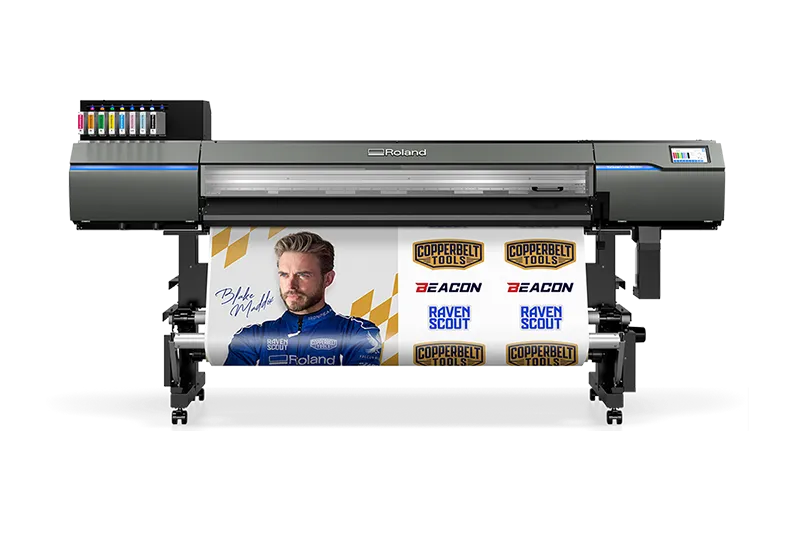
01 / МОЖНОСТИ
Изберете производ, а ние ќе ја усогласиме технологијата со материјалот, димензијата и количината.Фотографиите се илустративни примери и не прикажуваат изработки на KARAT.

ПРИМЕР НА ПРОИЗВОДDTF / ТЕКСТИЛ
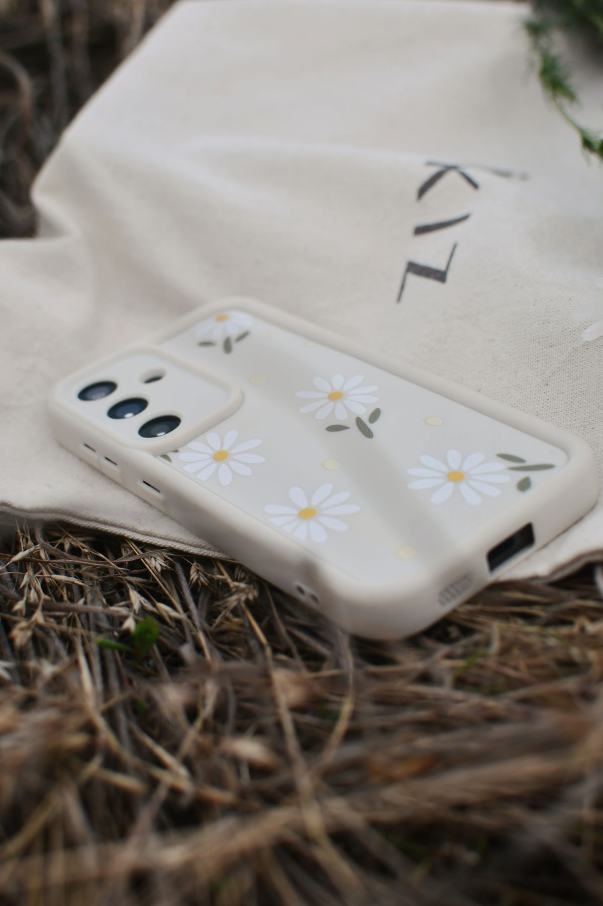
ПРИМЕР НА ПРОИЗВОДUV / ПРЕДМЕТИ
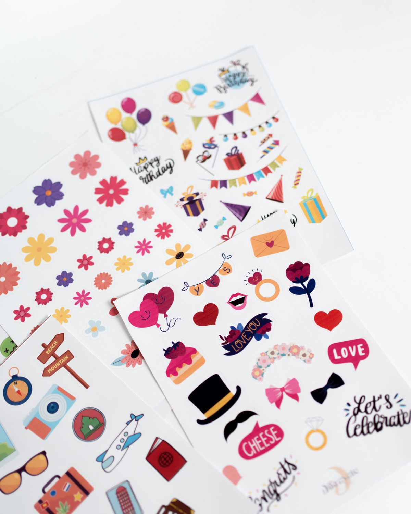
ПРИМЕР НА ПРОИЗВОДПЕЧАТ + СЕЧЕЊЕ
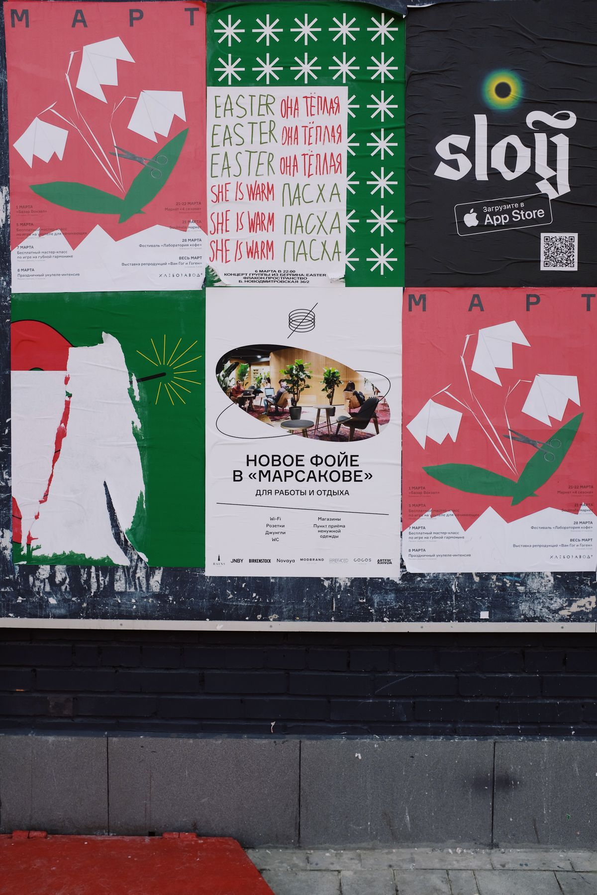
ПРИМЕР НА ПРОИЗВОДГОЛЕМ ФОРМАТ
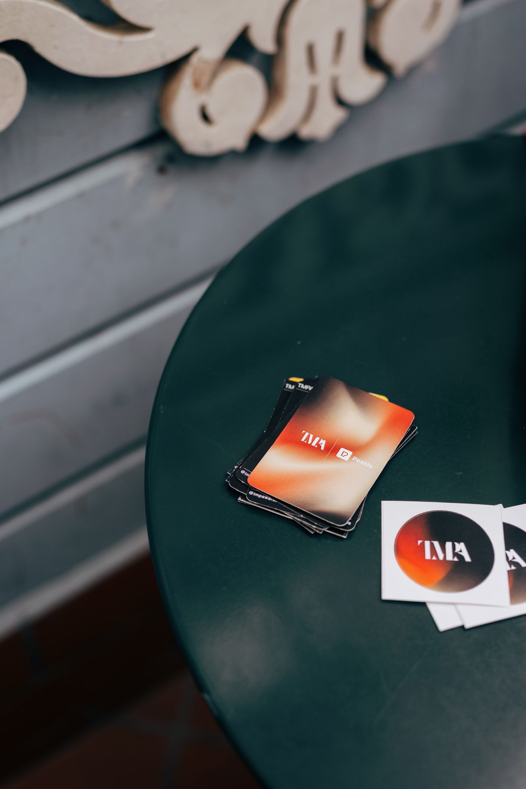
ПРИМЕР НА ПРОИЗВОДДИГИТАЛЕН ПЕЧАТ
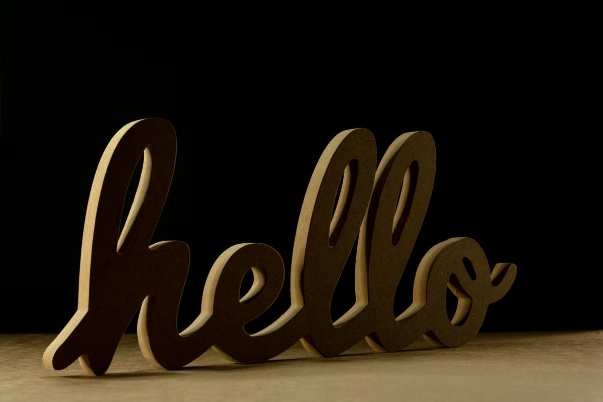
ПРИМЕР НА ПРОИЗВОДЛАСЕР / СЕЧЕЊЕ + ГРАВИРАЊЕ
ИДЕЈАТА Е ВАША. МОЖНОСТИТЕ СЕ НАШИ.
Пет различни технологии, многу начини вашата идеја да стане нешто што луѓето ќе го носат, користат, гледаат или подаруваат.
Запознајте ја опремата02 / ОПРЕМА
Клучните можности се засноваат на конкретната опрема. Изборот на материјал и завршна обработка се потврдуваат за секој проект.
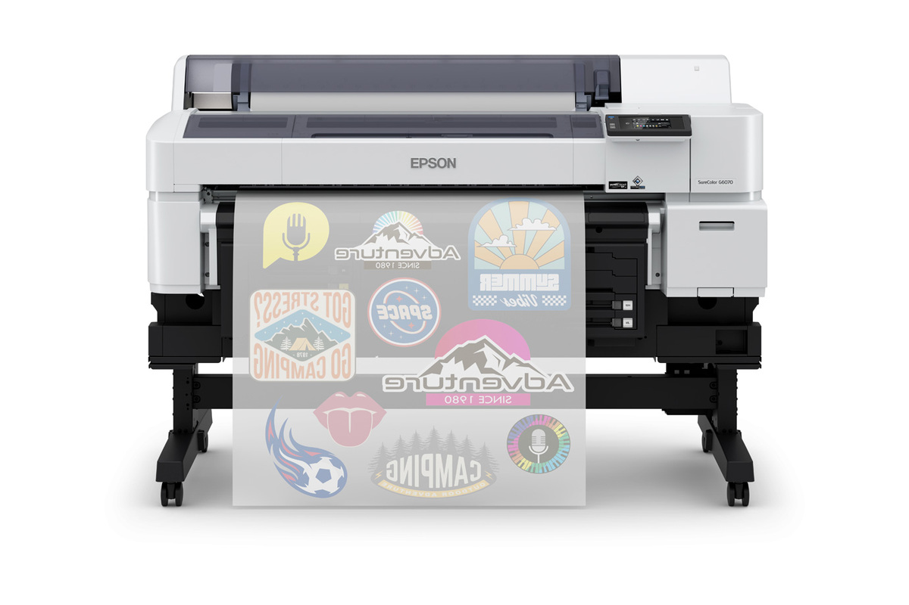
DTFilm печат со ширина до 35,4 инчи (околу 90 cm). Дизајнот се печати на филм и со соодветен трансфер процес се пренесува на текстил.
Памук, полиестер и мешани ткаенини, зависно од трансферот и тестот на материјалот.
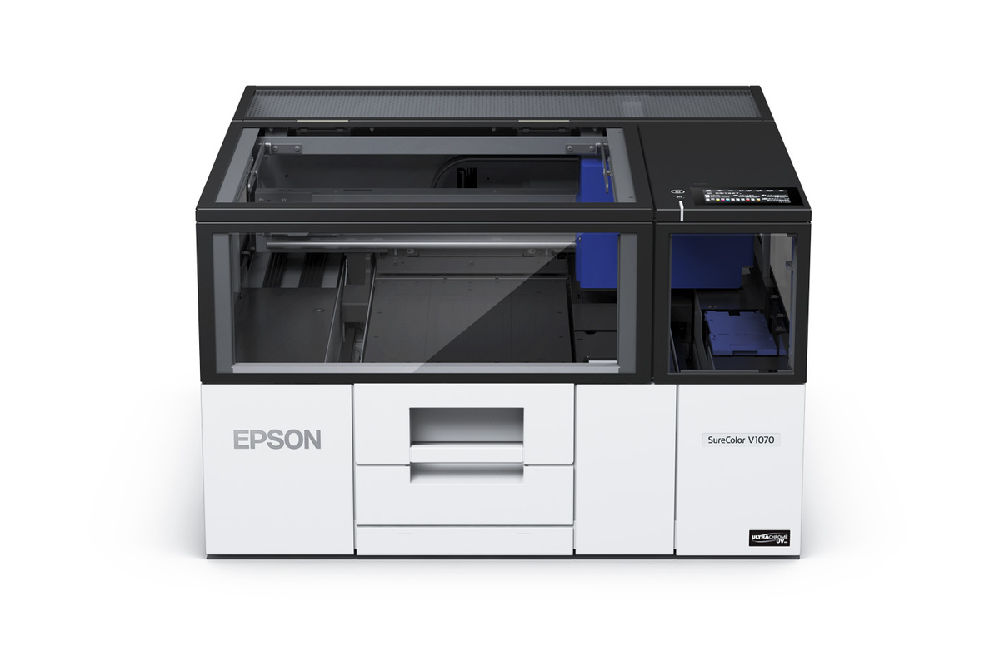
A4 UV flatbed печат за директна персонализација на предмети. Белата боја овозможува печат на темни и проѕирни подлоги, а лакот дава сјајни, мат и текстурни детали.
Акрил, дрво, стакло, метал, кожа и одредени пластики. Максимален медиум 299 × 212 mm, висина до 70 mm и тежина до 3 kg со држач.
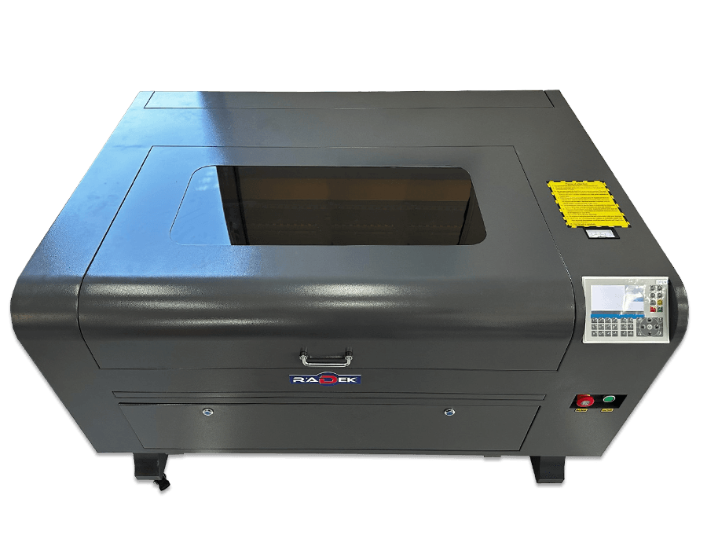
CO₂ ласер за сечење и гравирање со работна површина 600 × 900 mm. Оваа машина не печати боја; создава форма, исечок и гравура.
Дрво, MDF, шперплоча, акрил, кожа, картон и гума; гравирање на огледала, мермер и обложени метали според материјалот. Дебелината за сечење зависи од материјалот и моќноста.
Eco-solvent печат и контурно сечење во една машина, со максимална ширина на печат и сечење до 1.600 mm.
Соодветни ролни од винил, фолии и банер материјали. Трајноста и примената зависат од избраниот медиум и завршната обработка.
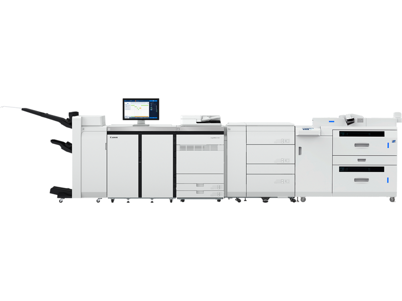
Професионален дигитален печат во боја за остар текст, фотографии и конзистентна боја. Поддржува формати до SRA3 и, со соодветна конфигурација, долги листови и медиуми до 400 g/m².
Обична, обложена, дебела, релјефна и синтетичка хартија, пликови и други поддржани медиуми. Форматот и граматурата зависат од поставените фиоки и дополнителна опрема.
Можностите опишуваат што поддржува опремата. За конкретен производ, материјал, димензија и завршна обработка се прави проверка пред изработка.
03 / ПРОЦЕС
Јасен пат од првиот бриф до готовиот производ.
Кажете ни што ви треба, за кого е наменето и која количина ја планирате.
Ги проверуваме форматот, подлогата и технологијата што одговара на проектот.
Го произведуваме договорениот печат, трансфер, исечок или гравура.
Од Скопје до вашата адреса — вршиме испорака низ целиот свет.
СКОПЈЕ · МАКЕДОНИЈА · СВЕТ
Работиме во Скопје и вршиме испорака низ целиот свет. Кажете ни каде треба да стигне вашиот проект.
Подготви барање04 / КОНТАКТ
Опишете го производот, количината и рокот. Испратете ни кратко барање по е-пошта и ќе ви одговориме со предлог.